Kyle Boss and I made a phong shader for spheres. You set up lights through the command line.
-ka r g b / -kd r g b / -ks r g b
Specifies ambient, diffuse, and specular color coefficients in RGB (floats between 0 and 1) respectively.
-sp v
Sets specular coefficient.
-pl x y z r g b / -dl x y z r g b
Adds a point or directional light of RGB at (X, Y, Z).
-t
Turns on the ‘toon’ flag, which implements cel shading by creating rough pixel thresholds.
-s
Turns on the ‘save’ flag, which saves image to current directory as img.bmp. Always put this flag at the end of the command line.
The Cool Stuff
Earth
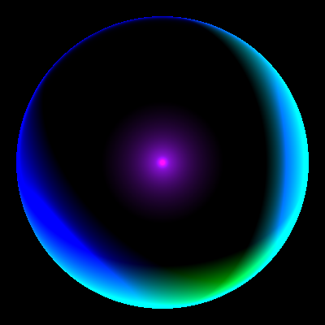 ./as1 -kd 1 1 1 -dl 0 0 1 0 0 1 -sp 21 -ks 1 0 1 -dl 0 5 5 0 2 0 -dl -5 0 5 0 2 2 2 -dl 5 5 5 0 0 2 2 -pl 0 0 1.1 .57 .07 .9Deadmau5
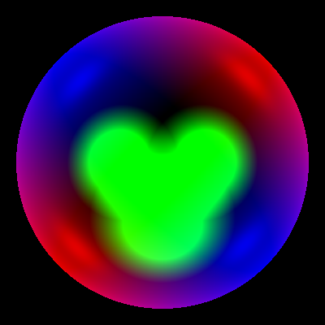 ./as1 -kd 1 1 1 -ks 0.3 0.3 0.3 -sp 32 -dl 200 200 100 1 0 0 -dl -200 -200 100 1 0 0 -dl 300 -300 100 0 0 1 -dl -300 300 100 0 0 1 -pl .325 0 1.04 0 1 0 -pl .325 0 1.04 0 1 0 -pl .325 0 1.04 0 1 0 -pl .325 0 1.04 0 1 0 -pl -.325 0 1.04 0 1 0 -pl -.325 0 1.04 0 1 0 -pl -.325 0 1.04 0 1 0 -pl -.325 0 1.04 0 1 0 -pl 0 -.5 1.04 0 1 0 -pl 0 -.5 1.04 0 1 0 -pl 0 -.5 1.04 0 1 0Pearl
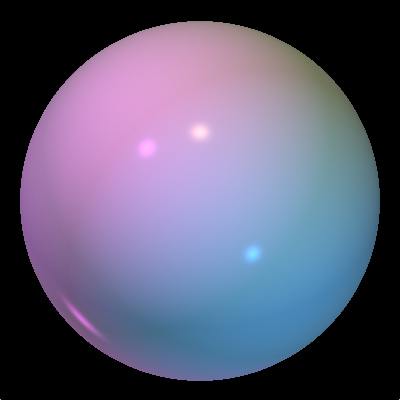 ./as1 -kd .5 .5 .5 -ks .5 .5 .5 -dl 2 2 3 .9 .24 .82 -pl -2 2 3 .75 .2 .95 -sp 250 -pl 2 -2 3 .1 .5 .9 -ka .1 .2 .1 -dl 0 -1 -1 .6 .5 .2(follow for more soft grunge)
Spanish Bowtie
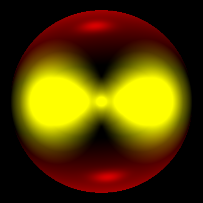 ./as1 -kd 1.0 1.0 1.0 -sp 40 -ks .65 .65 .65 -pl 0.5 -6 -1.5 .7 0 0 -pl -0.5 6 -1.5 .7 0 0 -pl 0 0 1.04 .93 .93 0 -pl .3 0 1.04 .93 .93 0 -pl .6 0 1.04 .93 .93 0 -pl .9 0 1.04 .93 .93 0 -pl -.3 0 1.04 .93 .93 0 -pl -.6 0 1.04 .93 .93 0 -pl -.9 0 1.04 .93 .93 0The Required Stuff
1 Light with Diffuse Shading
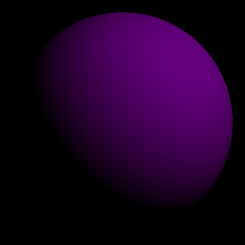 PLUMmeting: ./as1 -pl 200 200 200 0.5 0 0.5 -kd .8 0 1 Untitled 1: ./as1 -kd .5 .5 .9 -dl -1 -1 -2 1 1 1
Untitled 1: ./as1 -kd .5 .5 .9 -dl -1 -1 -2 1 1 1
1 Directional Light with Specular Shading
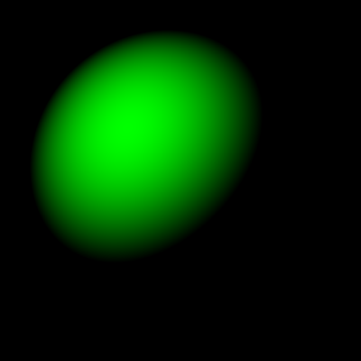 A Green Day: ./as1 -dl 200 -200 -200 0 1 0 -ks 0 1 0 -sp 1 Untitled 2: ./as1 -ks .5 .5 .9 -dl -1 -1 -1 1 1 1 -ka .45 .42 .7
Untitled 2: ./as1 -ks .5 .5 .9 -dl -1 -1 -1 1 1 1 -ka .45 .42 .7
1 Point Light with Specular Shading
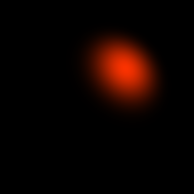 Amsterdam: ./as1 -pl 200 200 200 0.98 0.98 0.0 -ks 1 0.2 0 -sp 5 Bad Copper: ./as1 -ks .4 .7 .5 -pl -2 1 1 1 1 1 -ka .65 .3 .1
Bad Copper: ./as1 -ks .4 .7 .5 -pl -2 1 1 1 1 1 -ka .65 .3 .1
Diffuse & Specular Shading
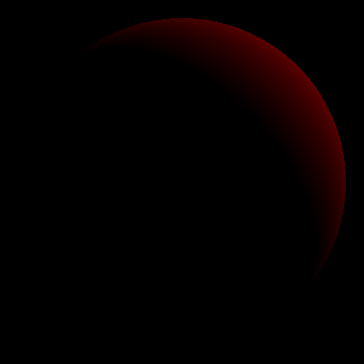 Dawn on Mars: ./as1 -ks .0 .2 0.7 -dl -10 -10 10 .7 0 .0 -sp 30 -kd .7 0 0 Twitter: ./as1 -kd .6 .3 .5 -ks .2 1 1 -sp 256 -pl 3 3 3 .2 1 .6 .9 -ka .5 .3 1 -dl 1 1 1 .3 .3 .3
Twitter: ./as1 -kd .6 .3 .5 -ks .2 1 1 -sp 256 -pl 3 3 3 .2 1 .6 .9 -ka .5 .3 1 -dl 1 1 1 .3 .3 .3
Toon Shading
A Study in Pink: example
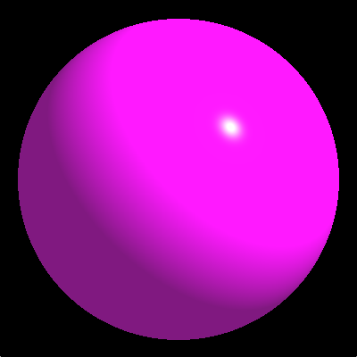 ./as1 -ka 0.5 0.1 0.5 -kd 1 0 1 -ks 1 1 1 -sp 128 -dl -1 -1 -1 1 1 1 ./as1 -ka 0.5 0.1 0.5 -kd 1 0 1 -ks 1 1 1 -sp 128 -dl -1 -1 -1 1 1 1 -t
./as1 -ka 0.5 0.1 0.5 -kd 1 0 1 -ks 1 1 1 -sp 128 -dl -1 -1 -1 1 1 1 -t
Lights
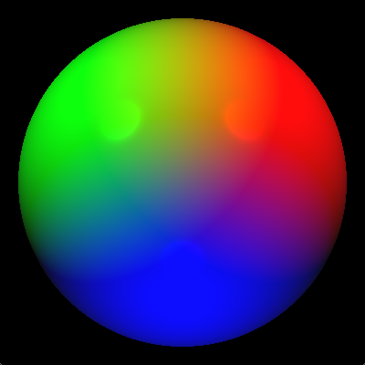 ./as1 -ka 0.05 0.05 0.05 -kd 1 1 1 -ks 1 1 1 -sp 64 -pl 2 2 2 1 0 0 -pl -2 2 2 0 1 0 -pl 0 -2 2 0 0 1 ./as1 -ka 0.05 0.05 0.05 -kd 1 1 1 -ks 1 1 1 -sp 64 -pl 2 2 2 1 0 0 -pl -2 2 2 0 1 0 -pl 0 -2 2 0 0 1 -t
./as1 -ka 0.05 0.05 0.05 -kd 1 1 1 -ks 1 1 1 -sp 64 -pl 2 2 2 1 0 0 -pl -2 2 2 0 1 0 -pl 0 -2 2 0 0 1 -t
Toonmau5
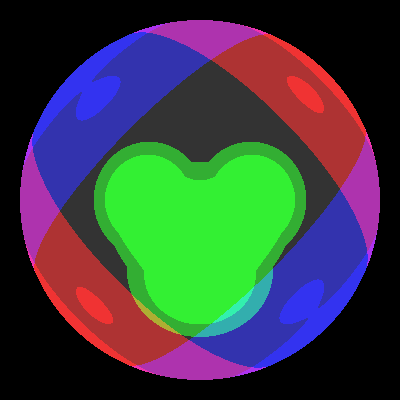 ./as1 -kd 1 1 1 -ks 0.3 0.3 0.3 -sp 32 -dl 200 200 100 1 0 0 -dl -200 -200 100 1 0 0 -dl 300 -300 100 0 0 1 -dl -300 300 100 0 0 1 -pl .325 0 1.04 0 1 0 -pl .325 0 1.04 0 1 0 -pl .325 0 1.04 0 1 0 -pl .325 0 1.04 0 1 0 -pl -.325 0 1.04 0 1 0 -pl -.325 0 1.04 0 1 0 -pl -.325 0 1.04 0 1 0 -pl -.325 0 1.04 0 1 0 -pl 0 -.5 1.04 0 1 0 -pl 0 -.5 1.04 0 1 0 -pl 0 -.5 1.04 0 1 0 -tSaving
Saving is accomplished by adding a "-s" in the end of the command line, which will write to img.bmp. For example, below is the original .bmp written by our program.